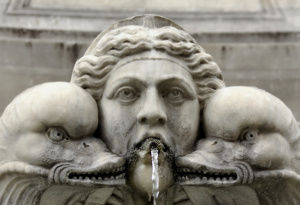

Inicialmente, a arte brasileira começou com a ajuda da Igreja Católica e das celebrações religiosas. No século XVII, a arte passou a se separar da igreja com pinturas que remetiam à situação e às pessoas da época. Nesse mesmo século, ocorreu a invasão holandesa em Pernambuco e isso contribuiu para a chegada de artistas que retratariam a natureza brasileira. Porém, eles não absorveram a identidade brasileira e voltaram ao seu país com o fim da ocupação.
Com a chegada do século XVIII, as cidades mais organizadas passaram a contar com mais artistas. Em 1732, no Rio de Janeiro, foi feita a primeira pintura em perspectiva do Brasil. Na Bahia, ocorria a ascensão do rococó com pinturas ilusionistas; porém, foi em Minas Gerais que ocorreu a verdadeira revolução artística. Os mineiros faziam pinturas barrocas sob a influência do rococó. Um dos artistas mais importantes dessa época foi o escultor Aleijadinho. Com o início do século XIV, foi criada, no Rio de Janeiro, a primeira escola voltada para o ensino da arte.
Barroco é um estilo de arte que surgiu no século XVI, na Itália. Os jesuítas trouxeram da Europa algumas influências religiosas que são predominantes no Barroco para serem utilizados nas construções e nas imagens feitas no país. Ele se desenvolveu principalmente durante o século XVIII, na região de Minas Gerais. As obras barrocas usavam para sua fabricação a pedra-sabão, o barro cozido e a madeira policromada. Utiliza a religiosidade relacionada com a arte renascentista. Os principais artistas desse gênero artístico foram Antônio Francisco de Lisboa, o Aleijadinho, e o pintor Manuel da Costa Ataíde.
Durante o período colonial, a arquitetura era bem rudimentar e utilizava as estruturas básicas conhecidas como tejupares. Posteriormente, os colonizadores começaram a construir casas feitas de taipa (construção que utilizava varas e galhos entrelaçados e cobertos com barro).
Os primeiros indícios de literatura no Brasil colônia foram os textos informativos que continham dados sobre os territórios brasileiros e sobre a Igreja Católica. A criação de obras literárias no Brasil teve início com a Carta de Pero Vaz de Caminha, com a descrição do que ele havia encontrado na nova terra. Durante o período de colonização, a literatura era muito influenciada pelos jesuítas e pela Igreja Católica. Eles foram autores de peças, poemas e sermões. No século XVIII, surgiram grêmios literários formados por profissionais de diversas áreas. Isso possibilitou que fossem escritas obras com a temática que incluía o Brasil.